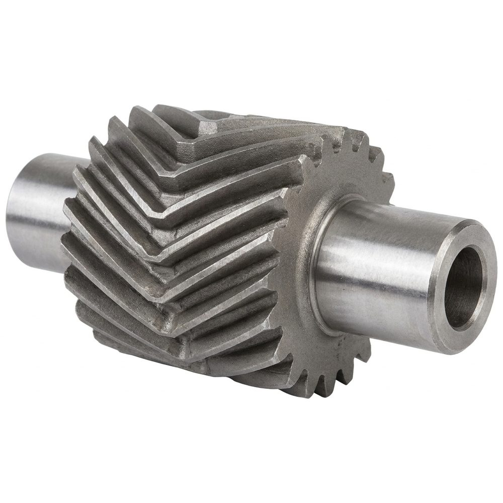
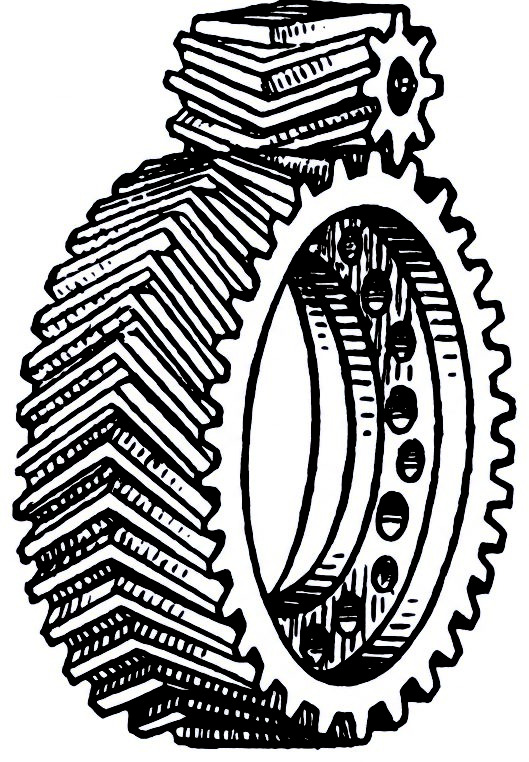

Позвонить: (4842) 75-75-05
Написать сообщение: m-40@inbox.ru
- Главная
- О компании
- Контакты
- Редукторы и мотор-редукторы
- Колеса крановые
- Блоки полиспаста
- Шкивы тормозные
- Муфты
- Крюки и крюковые подвески
- Грузовые барабаны
- Шлицевые детали
- Конические шестерни
- Цилиндрические шестерни
- Запасные части для козловых кранов
- Запасные части для портальных кранов
- Запасные части для башенных кранов
- Техническая информация
- Правовая информация
Цилиндрические шестерни → Шевронная передача
- Главная
- О компании
- Контакты
- Редукторы и мотор-редукторы
- Колеса крановые
- Блоки полиспаста
- Шкивы тормозные
- Муфты
- Крюки и крюковые подвески
- Грузовые барабаны
- Конические шестерни
- Цилиндрические шестерни
- Шлицевые детали
- Запасные части для козловых кранов
- Запасные части для портальных кранов
- Запасные части для башенных кранов
- Техническая информация
- Правовая информация

ООО «ЦКК» изготавливает шевронные шестерни со следующими характеристиками:
- Класс точности - до 6 включительно;
- Модуль - до 30 включительно;
- Длина рейки - до 3 500 мм включительно.
Изготавливаем шевронные шестерни в штучном и серийном производстве. Возможно изготовление по образцам и эскизам заказчика. Индивидуальный подход.

Специфика работы шевронных передач связанна с передачей больших мощностей при повышенных скоростях вращения, что и определяет характер износа
соприкасающихся элементов. Используемое в наиболее сложных, нагруженных и ответственных узлах и механизмах, соединение этого типа обеспечивает:
- Максимальную плавность передачи крутящего момента;
- Равномерное распределение нагрузки между несколькими зубьями;
- Нейтрализацию разнонаправленных осевых усилий;
- Минимальный уровень вибрации и шума.
Испытывая высокие нагрузки, шевронная передача требует пристального внимания во время технического обслуживания и своевременной замены элементов
при превышении допустимого значения износа.
Вследствие конструктивных особенностей, шевронные передачи наиболее сложны в изготовлении, требуют поэтапного выполнения целого
ряда операций и соблюдения технологического процесса.
У шевронных передач осевые силы, приложенные к полушевронам, взаимно компенсируются и не передаются на опоры. Что позволяет использовать для этих
передач угол наклона зубьев в диапазоне β=25…45°.
Основные геометрические размеры зависят от модуля и числа зубьев. При расчёте шевронных колёс учитывают два шага:
нормальный шаг зубьев pn - в нормальном сечении,
окружной шаг pt – в торцовом сечении; при этом pt=pn/cosβ.
Соответственно шагам имеем два модуля зубьев:
Окружной - mt=pt/π;
Нормальный - mp=pp/π
.
За расчётный принимают модуль mn, значение которого должно соответствовать стандартному. Это объясняется следующим:
для нарезания шевронных зубьев используется тот же инструмент, что и для прямозубых, но с соответствующим поворотом инструмента относительно
заготовки на угол. Поэтому профиль шевронных зуба в нормальном сечении совпадает с профилем прямого зуба; следовательно, mn=m.
Диаметры делительный и начальный - d=dw=mt·z/cosβ
Диаметр вершин зубьев
da=d+2·mn
Диаметр впадин зубьев
df=d-2·mn
Межосевое расстояние
aw=(d1+d2)/2=mt(z1+z2)/2
Профиль шевронного колеса в нормальном сечении соответствует исходному контуру инструментальной рейки и, следовательно, совпадает с профилем
прямозубого колеса.
Шевронные колеса, нарезаемые пальцевой фрезой, не имеют проточки по средине обода для выхода инструмента. Процесс образования углового расположения зубьев
осуществляется следующим образом:
Заготовке колеса сообщается медленное вращение. Пальцевая фреза перемещается вдоль оси детали. В результате суммирования этих движений на заготовке
профрезеровывается впадина зуба, расположенная под некоторым углом к оси колеса. После достижения фрезой средней плоскости колеса реверсивный механизм станка
изменяет направление вращения заготовки на противоположное по стрелке благодаря чему изменяется направление угла зуба и на заготовке образуются шевронные зубья.
Особенность нарезания зубьев пальцевой фрезой заключается в том, что на внутренней стороне шеврона отсутствует пересечение двух плоскостей в виде угла.
Вместо этого осуществляется закругление радиуса. Наличие этого закругления исключает возможность зацепления, и поэтому появляется дополнительная операция,
которая заключается либо в выфрезеровании с внутренней стороны шеврона выемки, либо чаще в срезании вершины угла шеврона.
Величина угла шеврона при нарезании пальцевой фрезой практически не ограничена и может выбираться по усмотрению конструктора. Это положение позволяет производить
расчет зацепления по нормальному модулю. Такой метод расчета дает возможность нарезать колеса с любым углом шеврона и любым числом зубьев данного модуля
нормальным набором пальцевых модульных фрез.
Нарезание шевронных колес на станках, работающих червячными фрезами, сопряжено с выполнением двух специфических операций: разметки зубьев шевронного колеса
и проверки угла винтовой линии зубьев. Первая операция необходима потому, что станки не имеют специальных устройств, которые бы автоматически обеспечивали
заданное положение вершины шеврона. Вторая операция носит контрольный характер и выполняется для исключения возможного случая брака, так как стоимость
нарезаемых колес чрезвычайно велика.
Для этого, чтобы обеспечить пересечение зубьев обоих венцов по средине канавки для выхода фрезы, поступают следующим образом:
После нарезания первого обода и перестройки станка расположение полученной впадины переносят на второй обод. Для этого чертилку, укрепленную в суппорте
станка, подводят к вершине какого-либо зуба с нижней стороны обода в точке m. Опуская суппорт без вращения стола, переносят на второй обод. Затем при
включенном обкаточном движении стола чертилкой наносят на ободе наклонную линию. Повторив эти движения, получают вторую наклонную линию, определяющую
границу впадины зуба. Подводя червячную фрезу и регулируя ее положение относительно колеса, достигают совпадение следа, оставляемого фрезой, ее срединой
впадины, ограниченной двумя рисками.
Этим методом достигается совмещение вершин шевронных колес в пределах до 0,5 мм.
Для проверки правильности угла винтовой линии зуба, которая определяется точностью расчета и порядком установки набора сменных колес гитары дифференциала,
используют кинематику станка. После настройки станка в суппорт закрепляют чертилку, которой наносят наклонную и вертикальную риски. Подводя чертилку
к верхней точке обода на ускоренном ходу при включенном дифференциале наносят винтовую риску. Затем, отключив вращение стола вертикальным перемещением
суппорта, проводят риску.
При правильном подборе сменных колес подсчитанное по замерам значение угла наклона зуба может отличаться от чертежного на величину ±10', что дает возможность
исключить грубую ошибку настройки.
В зависимости от модуля нарезаемого колеса черновые и чистовые проходы выполняются либо червячной фрезой, либо для более крупных модулей черновое прорезание
производится дисковыми фрезами с последующими чистовыми проходами червячной фрезой.
Следует рекомендовать нарезание колес с правой спиралью производить правой фрезой, а с левой спиралью левой фрезой. При нарезании зубьев разноименными фрезами
горизонтальная составляющая усилия резания не совпадает с направлением вращения стола, вследствие чего возникают колебания бокового зазора делительной пары
станка. Фреза работает неустойчиво, с набеганием на боковую поверхность нарезаемых зубьев, и на боковой поверхности их появляются выхваты, следы дрожаний и
повышенная шероховатость.
По вопросам изготовления шевронных передач обращайтесь в отдел продаж по телефону:
(4842) 75-75-05
ЦКК
Центр крановых компонентов
г. Калуга, ул. Комсомольская роща, д. 39
© 2026 ООО «Центр Крановых Компонентов»
ИНН 4000026221 · КПП 400001001